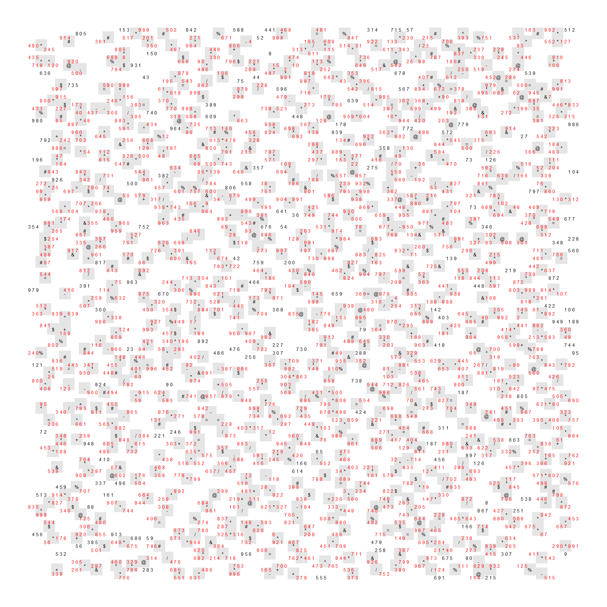

library(tidyverse)
library(here)
Wow what a doozie, the increase in difficulty was significant compared to Day 2. This was a fun one though, I think I could have done it in a more efficient way, but I was happy with the solution I came up with.
Part 1
Let’s start off with the prompt for this puzzle
What is the sum of all of the part numbers in the engine schematic?
We start off with reading in and preparing the data. I replaced all of the . with spaces so that I could use a more simple regex to identify the symbols later.
data <- read_lines(here('posts', 'aoc-2023-d3', 'puzzle-input.txt'))
data <- as_tibble(data)
data <- data |>
mutate(row = row_number(),
.before = value) |>
mutate(value = str_replace_all(value, '\\.', ' '))Here are some observations I made regarding the symbols and the values.
row 2, column 28 is a symbol
- row 1, column 27 is a valid spot (above and left of the symbol)
- row 1, column 28 is a valid spot (above the symbol)
- row 1, column 29 is a valid spot (above and right of the symbol)
- row 2, column 27 is a valid spot (left of the symbol)
- row 2, column 28 is location of the symbol
- row 2, column 29 is a valid spot (right of the symbol)
- row 3, column 27 is a valid spot (below and left of the symbol)
- row 3, column 28 is a valid spot (below the symbol)
- row 3, column 29 is a valid spot (below and right of the symbol)
The main observations is that the symbol is always in the center of a 3 by 3 grid. We can use this to identify the locations of the symbols. We need to identify all of the adjacent cells that are valid, and then we can use this to identify the locations of the valid parts numbers.
data# A tibble: 140 × 2
row value
<int> <chr>
1 1 " 153 988 502 842 588 441 468 …
2 2 " 805 * # % * …
3 3 " 914 # 617 201 271 671 52 898 …
4 4 " # 361 * * -4 …
5 5 "490* 350 * 664 806 …
6 6 " 245 805 467 449 + 31…
7 7 " * 150 * 8 …
8 8 "435 688 8 $ 330 474…
9 9 " * * 920 % 666 90 786$ 221 * …
10 10 " 718 120 @ $ 931 * * 15 10…
# ℹ 130 more rowsWe write two helper functions to identify the locations of the symbols and the part numbers. We use the [:symbol:] and [:punct:] character classes to identify the symbols, and the [:digit:] character class to identify the part numbers. For the symbols location, I also tabulated the ‘start’, and ‘end’ of the locations adjacent to the symbol in the helper function.
identify_symbols_location <- \(x) {
str_locate_all(x, '[:symbol:]|[:punct:]')[[1]] |>
as_tibble() |>
select(symbol = start) |>
mutate(
symbol_start = symbol - 1,
symbol_end = symbol + 1
)
}
identify_parts_location <- \(x) {
str_locate_all(x, '[:digit:]+')[[1]] |>
as_tibble() |>
rename(
'parts_start' = start,
'parts_end' = end
)
}
data <- data |>
mutate(
symbol_locations = map(value, \(value) identify_symbols_location(value)),
part_number_locations = map(value, identify_parts_location),
part_number_locations = map2(value, part_number_locations, \(value, part_number_locations) {
part_number_locations |>
mutate(part_number = str_sub(value, parts_start, parts_end),
.before = parts_start)
})
)I next construct a tibble of the grid that we are working with. This is a 140 by 140 grid, and we will use this as a template to merge the locations of the symbols, parts number, and the values into.
grid <- crossing(
row = 1:140,
column = 1:140
)Once we get the symbol locations we merge this back into our grid. The trick to this part is to identify the adjacent cells to the symbol, and then merge this back into the grid. I did this by first unnesting the symbol locations, and then I created a list of the adjacent cells to the symbol. I then unnested this list, and then merged this back into the grid. I then filled in the symbol column with a 1 if the cell was a symbol, and a 0 if it was not.
symbol_locations <- data |>
select(row, symbol_locations) |>
unnest(symbol_locations) |>
rowwise() |>
mutate(row = list(row + c(-1, 0, 1))) |>
unnest(row) |>
rowwise() |>
mutate(column = list(symbol_start:symbol_end)) |>
unnest(column) |>
select(row, column) |>
mutate(symbol = 1)
grid <- grid |>
left_join(symbol_locations, by = join_by(row, column)) |>
mutate(symbol = ifelse(is.na(symbol), 0, symbol))Next I wanted to extract out the values from the puzzle input. I split the values into individual characters, and then I merged this back into the grid.
values <- data |>
select(row, value) |>
mutate(value = str_split(value, '')) |>
unnest(value) |>
group_by(row) |>
mutate(column = row_number()) |>
ungroup()
grid <- grid |>
left_join(values, by = join_by(row, column))Next I extracted out the location of the parts numbers, then again merged this back into the grid. I further checked to see if the parts numbers are ‘valid’ or adjacent to a symbol. I did this by checking whether the parts number falls on any of the symbol adjacent cells symbol = 1.
parts_number <- data |>
select(row, part_number_locations) |>
unnest(part_number_locations) |>
mutate(i = row_number()) |>
rowwise() |>
mutate(column = list(parts_start:parts_end)) |>
unnest(column) |>
select(i, row, column, part_number)
grid <- grid |>
left_join(parts_number, by = join_by(row, column)) |>
group_by(row, part_number) |>
mutate(
valid = ifelse(any(symbol == 1), TRUE, FALSE),
valid = ifelse(is.na(part_number), FALSE, valid)
) |>
ungroup()Now that we have all the locations of the symbols, parts numbers, and the values, we can plot the grid. We can see that the symbols are in the center of a 3 by 3 grid (grey). We can also see that any part numbers that fall within the 3 by 3 grid are valid (red).
ggplot(grid, aes(x = column, y = row, fill = factor(symbol))) +
geom_tile() +
coord_equal() +
scale_y_reverse() +
geom_text(aes(label = value, color = valid), size = 2) +
theme_void() +
scale_color_manual(values = c('black', 'red')) +
scale_fill_manual(values = c('white', 'grey90')) +
theme(
legend.position = 'none'
)
Now that we have all of the data in a tidy dataframe, we can identify the valid parts numbers, and take the sum of the parts numbers to get the answer.
grid |>
filter(!is.na(part_number)) |>
filter(valid == TRUE) |>
select(i, row, part_number) |>
distinct() |>
summarize(part_number = sum(as.numeric(part_number)))